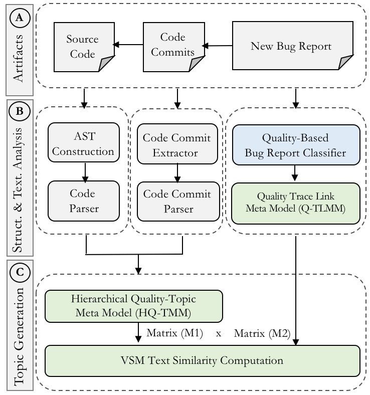

Hierarchical & Context-Aware Clustering of Quality Concerns in Sup. of Bug Repair
 Project Description. Quality bugs are difficult to detect because the implemented quality-related features are commonly scattered across the codebase. Unfortunately, this scattered information prevents software developers from holistically understanding the root cause of quality bugs. The traditional view of a system does not support a hierarchical code view for monitoring how quality features are topically related and how they interact with each other. In this paper, we demonstrate how these limitations can be overcome by leveraging a Hierarchical Dirichlet Process a long with other supporting techniques such as structural and textual analyses to capture hierarchical topical relationships among quality features across codebase. We present SoftQualTopicDetector that is capable of inferring a set of candidate classes by clustering scattered quality content into a meaningful hierarchy. The class hierarchy is built by giving more weight to the classes that contain information relevant to that of a bug description. Additionally, SoftQualTopicDetector incorporates three visualization variations for monitoring, prioritizing, and 3-D tracing of classes affected by quality concerns for easy maintenance and traceability. Evaluation of SoftQualTopicDetector shows an improvement over the baseline and the state-of-the-art across all applications by ~17% and ~21% in terms of average precision and recall.